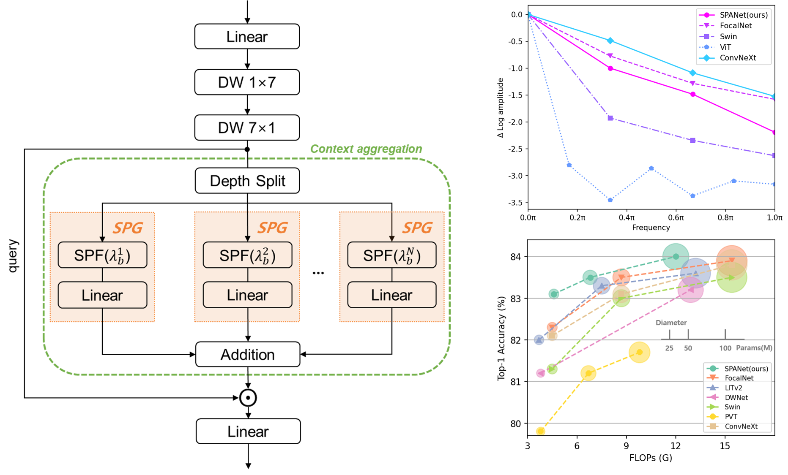

SPAM, The Frequency-balancing Token Mixer.

Recent studies show that self-attentions behave like low-pass filters (as opposed to convolutions) and enhancing their high-pass filtering capability improves model performance. Contrary to this idea, we investigate existing convolution-based models with spectral analysis and observe that improving the low-pass filtering in convolution operations also leads to performance improvement. To account for this observation, we hypothesize that utilizing optimal token mixers that capture balanced representations of both high- and low-frequency components can enhance the performance of models. We verify this by decomposing visual features into the frequency domain and combining them in a balanced manner. To handle this, we replace the balancing problem with a mask filtering problem in the frequency domain. Then, we introduce a novel token-mixer named SPAM and leverage it to derive a MetaFormer model termed as SPANet. Experimental results show that the proposed method provides a way to achieve this balance, and the balanced representations of both high- and low-frequency components can improve the performance of models on multiple computer vision tasks.
BibTex Code Here